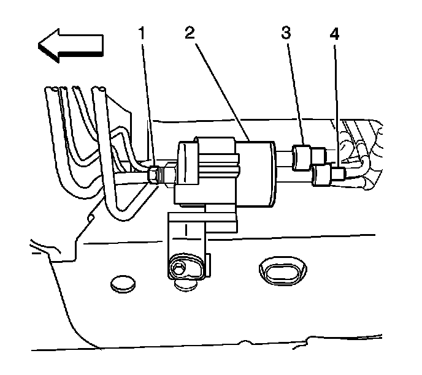

Fuel Filter Replacement
Fuel Filter Replacement
Removal Procedure

Important:
* There is no service interval for fuel filter replacement. Only replace the fuel filter if the filter is restricted.
* If you find a restricted fuel filter, inspect and clean the inside of the fuel tank.
1. Relieve the fuel system pressure. Refer to Fuel Pressure Relief (With CH 48027) ()Fuel Pressure Relief (Without CH 48027) () .
2. Raise the vehicle. Refer to Lifting and Jacking the Vehicle (Lifting and Jacking the Vehicle) .
3. Disconnect the quick-connect fittings (3 and 4) at the fuel filter inlet. Refer to Metal Collar Quick Connect Fitting Service () or Plastic Collar Quick Connect Fitting Service () .
4. Disconnect the threaded fitting (1) at the fuel filter outlet.
5. Drain any remaining fuel into an approved gasoline container.
6. Remove the fuel filter (2).
7. Remove the fuel pipe O-ring.
8. Discard the fuel filter into an approved container.
Installation Procedure
1. Remove the protective caps from the new fuel filter.
2. If originally equipped, install new plastic connector retainers on the fuel filter inlets. Install the new retainers in the same position as on the old fuel filter.
3. Lubricate the new fuel pipe O-ring with clean engine oil.
4. Install the fuel pipe O-ring.
5. Slide the fuel filter into place.
6. Connect the quick-connect fittings (3 and 4) to the inlet side of the filter. Refer to Metal Collar Quick Connect Fitting Service () or Plastic Collar Quick Connect Fitting Service () .
Notice: Refer to Fastener Notice .
7. Connect the threaded fitting to the fuel filter outlet. Use a back-up wrench in order to prevent the fuel filter from turning.
Tighten the fuel filter outlet fitting to 30 N.m (22 lb ft).
8. Lower the vehicle.
9. Ensure that the fuel tank filler cap is installed correctly.
10. Connect the negative battery cable. Refer to Battery Negative Cable Disconnection and Connection (LHD) ()Battery Negative Cable Disconnection and Connection (RHD) () .
11. Perform the following procedure in order to inspect for leaks:
1. Turn ON the ignition, with the engine OFF for 2 seconds.
2. Turn OFF the ignition for 10 seconds.
3. Turn ON the ignition, with the engine OFF.
4. Inspect for fuel leaks.
12. Install the fuel injector sight shield. Refer to Fuel Injector Sight Shield Replacement () .